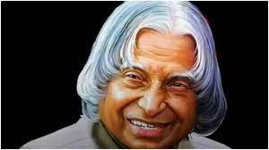

Hello!!!My Name Is Chaitanya Today I am tell About Hobby which is playing a Badminton
My Name is Chaitanya Vidya Sagar.Istudy in class 7 . I can tell about My Hobby,My Hobby is to play a Badminton , it is very ausome and good . I like the Badminton.
My Favorit Player
Kento Momota
Kento Momota is a Japanese badminton player. He is known to have a skillful and relentless play style on court. He has won several major badminton tournaments including two World Championships titles, two Asian Championships titles, and one All England title.
My Inspiration

A.P.J Abdul Kalam
Avul Pakir Jainulabdeen Abdul Kalam was an Indian aerospace scientist who served as the 11th President of India from 2002 to 2007. He was born and raised in Rameswaram, Tamil Nadu and studied physics and aerospace engineering.